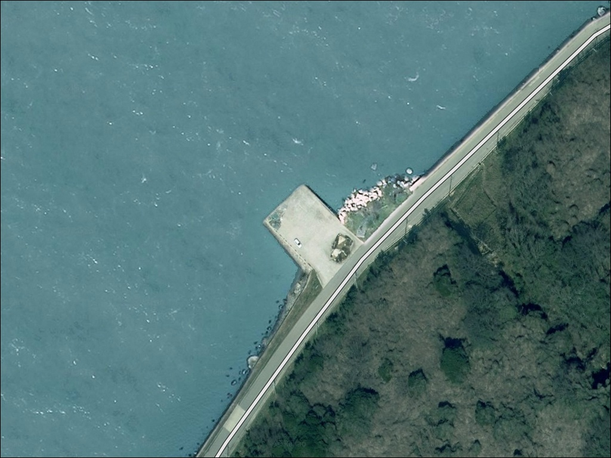
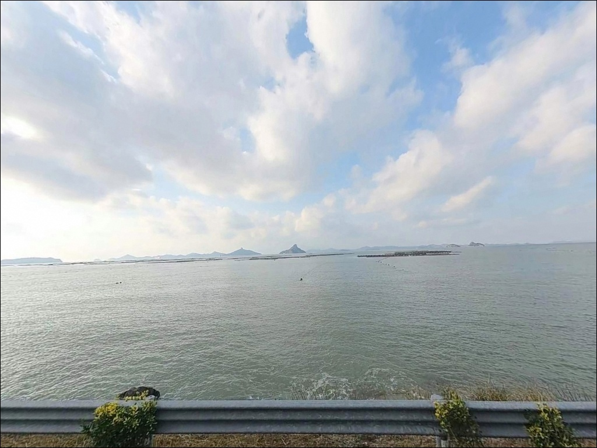
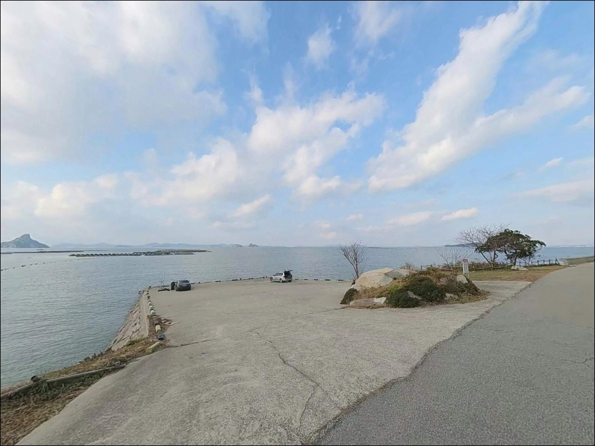
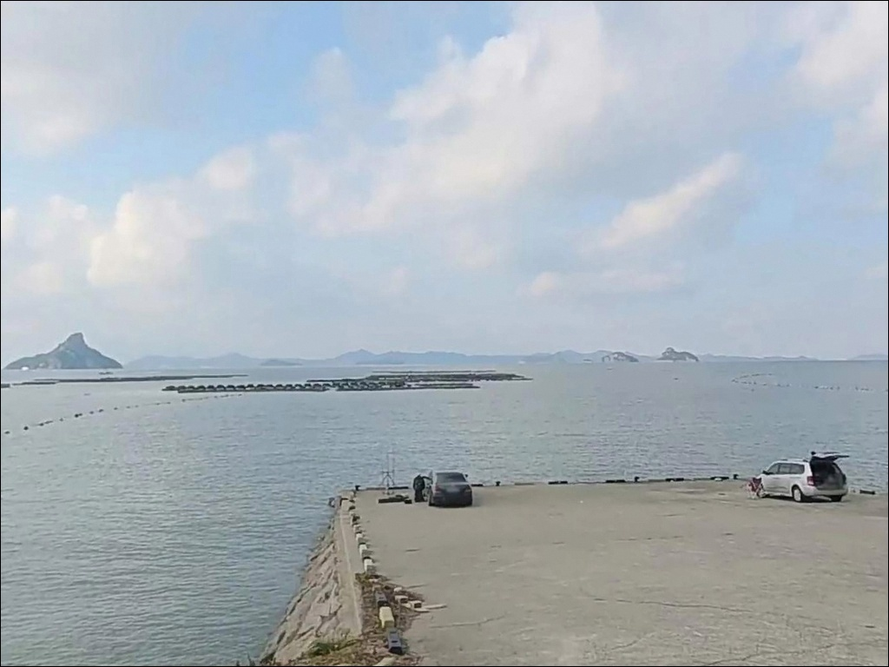
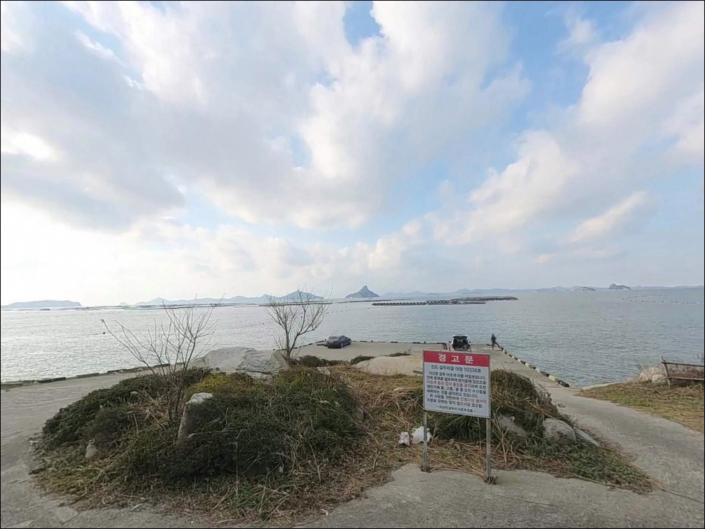
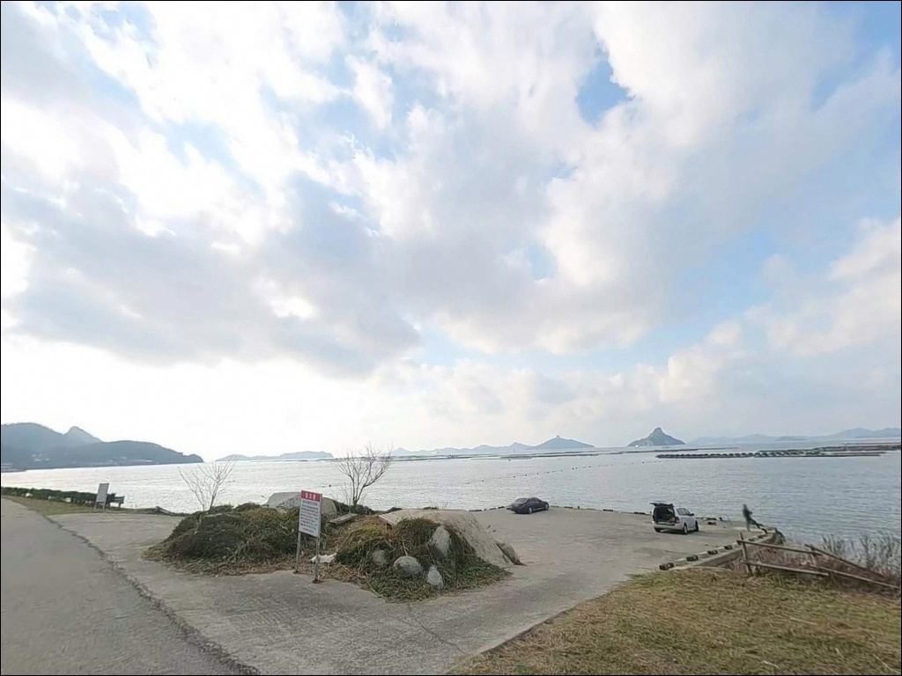
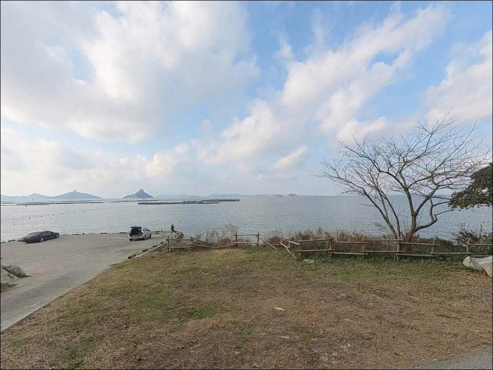
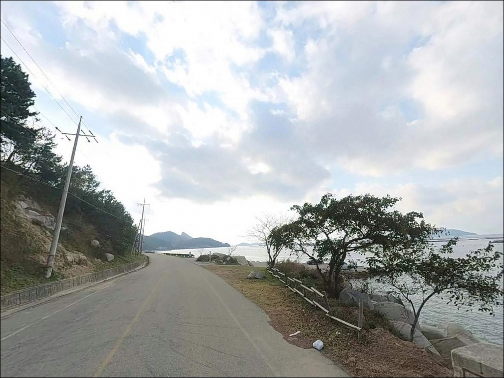
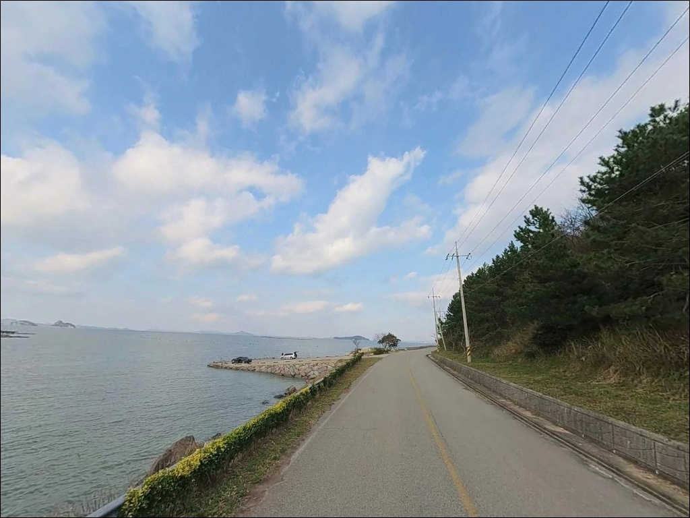

보전리 선착장, 진도 전남 진도군 고요함이 매력인 차박, 낚시 감성 장소
이 페이지에는 광고(제휴 링크 포함)가 있으며, 광고 링크를 통해 구매하면 운영자가 판매 수익 또는 수수료를 받을 수 있습니다. 포인트 사진: 카카오맵 스카이뷰·로드뷰. 이 페이지의 지도·사진 이미지는 카카오맵의 실제 서비스 이미지와 다를 수 있습니다.


포인트 안내
보전리 선착장
전남 진도군 지산면 보전리 1150-5
진도 해역에서 가장 많이 놓치는 판단이
물때 확인입니다.
이 일대 조류는 매우 빠른 편이라
사리 전후에 진입하면
어떤 채비를 써도 바닥 탐색 자체가
불가능해지는 수준까지 세집니다.
원투 채비를 날려도 조류에 쓸려
자리를 잡지 못하는 상황이 됩니다.
이 글은 보전리 선착장의
진입 동선, 차박 여건, 물때 판단 기준,
낚시 방식 적합성을 중심으로 정리합니다.
조황 단정이나 특정 어종 보장은
이 글의 범위에 포함되지 않습니다.

1. 진입 동선과 포인트 접근성
보전리 선착장은 803번 지방도를 따라
지산면으로 진입한 뒤,
해안 방향으로 이어지는
소형 마을 도로를 타고 닿는 구조입니다.
도로 폭이 넓지 않아
승용차 또는 소형 SUV 기준의 접근이
현실적인 선택입니다.
선착장 주변 회차 공간은
소형 차량 기준으로는 가능한 수준이지만,
대형 차량이라면 들어갔다가
되돌아 나오기 어려운 구조일 수 있습니다.
출발 전 위성지도로 진입로를 먼저 확인하는
것이 기본 준비입니다.
선착장 진입부 공터와
선착장 내측 공간이 주차 후보가 됩니다.
마을 어선의 접안·출항 동선과
겹치지 않는 자리를 골라야 하며,
어선 작업이 진행되는 시간에는
자리를 비워주는 것이 기본 매너입니다.

2. 차박 환경과 야간 체류 여건
보전리는 소규모 어촌 마을로
민가 밀집도가 낮은 편입니다.
야간에는 차량 통행이 거의 없어
조용한 분위기를 기대할 수 있지만,
가로등 수가 제한적인 구간이 있어
개인 조명 장비는 반드시 챙겨야 합니다.
차박이란 차량을 숙박 공간으로 활용하며
현장에서 하룻밤 머무는 여행 방식입니다.
내만 구조 특성상 외해 파도 영향은
상대적으로 적은 편이지만,
진도 일대는 바람 방향에 따라
포인트 여건이 빠르게 바뀌는 편이라
기상 예보를 당일 아침 다시 확인하는
것이 기본입니다.
선착장 주차 공간이 좁은 만큼
차박을 메인으로 계획한다면
현장 여건을 먼저 살피고,
자리가 없을 경우를 대비한
대안 동선도 미리 정해두는 편이 좋습니다.


3. 주변 편의시설 및 인프라 현황
보전리 선착장 반경 3km 이내에는
편의점이나 식당을 기대하기 어렵습니다.
지산면 소재지인 인지리까지
이동해야 기본 생활 인프라를 이용할 수 있으며,
인지리 소재 CU 편의점(24시간 운영)이
가장 가까운 편의점으로 확인됩니다.
식수·얼음·낚시 소품·연료는
출발 전에 미리 갖춰두는 것이
현실적인 준비 방식입니다.
응급 상황 발생 시에는
인지리 방향의 의원(061-542-7577)이
반경 내에서 확인되는 의료기관입니다.
이 포인트는 완전 자급 체제로 진입해야 한다는 점에서,
처음 방문이라면 진도 서망항처럼
인프라가 잡힌 거점을 기점으로 삼고
보전리를 병행 탐색하는 동선이
현실적인 운용 방법입니다.

4. 진입 전 반드시 확인해야 할 준비사항
이 포인트에서 가장 먼저 확인할 것은
물때입니다.
진도 해역은 조류가 빠르기로 알려진 지역으로,
사리 전후에는 원투 채비를 아무리 무겁게
달아도 흐름을 버티기 어렵습니다.
바다타임에서 보전리 기준 물때를 확인하고
조금 전후 또는 간조·만조 전환
타이밍에 출발 시각을 맞추는 것이
기본 전략입니다.
진입로는 위성지도로 미리 파악해두고,
식수·채비·조명 장비를 자급 기준으로
완비해서 출발해야 합니다.
여분 채비는 넉넉하게 준비하는 편이 좋으며,
밑걸림이 잦은 지형인 만큼
바늘·봉돌·목줄을 여러 벌 챙기는 것이
기본입니다.
마을 선착장이라 어선 조업이 이루어지는 공간입니다.
어선 이동 동선과 어구에 접촉하지 않도록
자리를 잡는 것이 기본 매너이며,
야간 낚시 시에는 헤드랜턴과
구명조끼를 반드시 챙겨야 합니다.

5. 지형 기반 낚시 여건 분석
보전리 선착장의 특성은
내만 해역을 품은 구조에 있습니다.
외해 직접 노출이 적어 파도 영향은
덜한 편이지만,
진도 지산면 일대 해역은
조류가 빠른 특성을 지녀
물때에 따라 현장 여건이 크게 달라집니다.
보전리 선착장 끝단은 외항 방향 조류 변화가 있어
원투 채비가 힘을 발휘할 수 있는 구조입니다.
선착장 끝단과 외항 방향이
상대적으로 수심을 유지하는 구간이며,
간조 시에는 수심이 낮아지는 만큼
만조 전후 타이밍에 채비를 운용하는 것이
현장을 제대로 활용하는 방법입니다.
선착장 인근 갯바위 구간은
루어 탐색 동선을 확보해주는 지형입니다.
인근 해역에 수중 구조물이 영향을 줄 수 있어
채비가 걸리는 방향을 현장에서
먼저 확인하고 자리를 잡는 편이 안전합니다.
출조 전 최신 조황은 꼭 검색해 보시기 바랍니다.


6. 낚시 자리 선택 기준이 달라지는 조건
이 포인트의 기본 스타일은 원투낚시입니다.
선착장 끝단에서 외항 방향으로 채비를 날려
바닥층을 탐색하는 방식이
지형 구조와 잘 맞습니다.
감성돔·도다리·붕장어 등
바닥 어종을 기대해볼 수 있는 지형이며,
가을부터 이듬해 봄까지가
원투낚시 시즌으로 알려진 편입니다.
정조 타이밍에는 찌낚시도 운용해볼 만합니다.
내만 구조 특성상 조류가 잔잔해지는
구간이 생기면
찌채비를 띄워 감성돔·숭어를 노리는
선택지로 전환하는 판단이 유효합니다.
가을철에는 에깅도 시도해볼 수 있습니다.
진도 서쪽 해역은 에깅 시즌
갑오징어 반응이 있는 권역에 속하며,
선착장 끝단과 갯바위 경계 구간을
천천히 탐색하는 방식이 이 지형에 어울립니다.
라이트 루어로 소형 어종을 탐색하는
운용도 선착장 주변 지형에 맞는 방식입니다.

7. 대안 포인트와 플랜 B 동선
보전리 선착장 여건이 맞지 않거나
주차 공간이 여의치 않을 때는
나리 방파제가 첫 번째 대안입니다.
진도 북부 해안에 자리한
규모 있는 방파제 구조로,
외항 공략이 가능해
원투낚시 운용 여건이 잡힌 포인트입니다.
무조리 방파제도 같은 방향의 대안으로
활용할 수 있습니다.
진도 북부 해안에서 생활 낚시 기반이
잡혀 있는 포인트로,
보전리에서 이동 동선을
크게 벗어나지 않고 닿을 수 있는
위치에 있습니다.
서망항도 거리는 있지만
고려할 수 있는 대안입니다.
진도를 대표하는 출항지로
방파제 연안 원투 공간이 확보되어 있고,
인프라도 상대적으로 갖춰져 있어
보전리를 처음 찾는다면
서망항을 기점으로 삼고
보전리를 병행 탐색하는 동선이
효율적입니다.

조류를 읽고 들어가야
보전리 선착장이 제 모습을 보여줍니다
원투낚시나 찌낚시를 즐기는 낚시인이라면
보전리 선착장의 내만 구조는
물때만 잘 맞추면 운용하기 좋은 지형입니다.
감성돔·도다리를 노리는 가을부터 봄 시즌
원투낚시 계획에 잘 맞는 포인트이며,
온라인 정보가 많지 않아
직접 발품을 팔아야 하는
탐험형 포인트이기도 합니다.
다만 물때 계산 없이 사리 전후에 진입하거나,
편의시설을 기대하고 찾아가면
현장에서 낭패를 보기 쉽습니다.
물때 확인, 자급 준비, 진입로 점검,
이 세 가지를 갖추고 간다면
한적하고 조용한 포인트를
기억에 남기는 출조가 됩니다.
조류가 잔잔해지는 타이밍에 자리를 잡고
낚싯대를 펼친 채 하룻밤을 보내는 차박이라면,
진도 서부 해안의 조용한 분위기를
온전히 즐길 수 있는 출조가 됩니다.